메트릭으로 이상을 찾고,
로그로 원인을 찾는다
쿠버네티스에서 메트릭과 로그를 모으고, 보고, 알림으로 받는 방법.
실습 전에 도구 6개를 설치한다
# macOS · Homebrew (없으면 먼저 설치: brew.sh) brew install --cask docker # 또는 --cask orbstack brew install kind helm kubernetes-cli k6 jq # 설치 확인: 여섯 줄 모두 버전이 나오면 된다 docker version --format 'Client {{.Client.Version}} / Server {{.Server.Version}}' kind version kubectl version --client helm version --short k6 version jq --version
| 도구 · 쓰는 곳 | 확인 명령 |
|---|---|
| Docker kind 노드 · 이미지 빌드 | docker versionServer 부분까지 나와야 한다 |
| kind 로컬 클러스터 | kind version |
| kubectl 클러스터 조작 | kubectl version --client |
| Helm 스택 · Loki · Alloy 설치 | helm version |
| k6 부하 생성 | k6 version |
| jq API 응답(JSON) 읽기 | jq --version |
"주문이 느려요"라는 제보 한 건을 끝까지 따라간다
P99 790ms.
평균 45ms만 보면 멀쩡해 보였다
URI별로 나눠 보니
/api/chaos/slow만 805ms
AppHighErrorRate 발화
"order-api 에러율 5.9%"
알림이 난 시각의 로그에서
실패한 요청을 찾는다
가장 느린 1% 요청의 경계값
요청 100건을 빠른 순으로 줄 세웠을 때 99번째 요청의 응답 시간. "P99 790ms"는 99%는 790ms 안에 끝났고, 가장 느린 1%는 그보다 오래 걸렸다는 뜻이다. 평균이 가리는 느린 요청을 드러낸다.
AppHighErrorRate가 "발화"했다
AppHighErrorRate는 우리가 정의한 알림 규칙의 이름이다. 조건은 "5xx(서버 오류) 응답 비율이 5%를 넘는 상태가 2분 이상 지속". 조건이 충족되면 규칙이 firing(발화) 상태가 되고 Alertmanager가 담당자에게 알림을 보낸다.
메트릭과 로그는 수집 경로가 다르고, 보는 화면은 하나다
TSDB(Time Series Database · 시계열 데이터베이스): 값을 측정 시각과 한 쌍으로 묶어 메트릭 이름·라벨별로 시간 순서대로 쌓는 저장소. 프로메테우스에 내장되어 있다.
프로메테우스는 대상에서 메트릭을 가져와 시간 순으로 저장한다
| 용어 | 원어 · 풀 네임 | 뜻 |
|---|---|---|
| 스크레이프 | Scrape (직역: 긁어 오기) | 프로메테우스가 대상의 HTTP 주소(/metrics 등)에 주기적으로 요청해 그 순간의 메트릭 값을 읽어 가는 동작. 실습 주기는 30초 |
| 풀 방식 | Pull model | 수집기가 대상에 요청해서 가져온다. 반대는 대상이 수집기로 밀어 넣는 푸시(Push) 방식 |
| 타깃 | Target | 스크레이프할 대상 하나(주소 + 경로). 쿠버네티스에서는 라벨로 자동 발견한다. 같은 목적의 타깃 묶음은 잡(Job) |
| Prometheus | 프로메테우스 · CNCF(Cloud Native Computing Foundation) 졸업 프로젝트 | 메트릭을 수집 · 저장 · 질의하고 알림 규칙을 평가하는 모니터링 시스템 |
| TSDB | Time Series Database · 시계열 데이터베이스 | (시각, 값) 쌍을 메트릭 이름 + 라벨별로 저장하는 DB. 프로메테우스는 자기 로컬 디스크에 2시간 단위 블록으로 쌓고, 보존 기한(실습: 3일 또는 4GB)이 지나면 지운다 |
Alloy가 로그를 수집해 보내고, Loki가 저장하고 조회한다
| 용어 | 원어 · 풀 네임 | 뜻 |
|---|---|---|
| stdout · stderr | Standard output · Standard error (표준 출력 · 표준 에러) | 프로그램이 출력을 내보내는 기본 통로. 컨테이너가 여기로 쓴 줄을 런타임이 노드의 /var/log/pods 아래 파일로 남긴다 |
| Alloy | Grafana Alloy · 그라파나 랩스의 수집 에이전트 | OpenTelemetry Collector 배포판에 프로메테우스 파이프라인을 내장한 수집기. 파드 로그를 읽어 라벨을 붙이고 Loki로 보낸다 |
| Loki | Grafana Loki · 로그 집계 시스템 | 로그를 저장하고 조회한다. 로그 본문은 색인하지 않고 라벨만 색인하며, 본문은 압축 덩어리(chunk)로 저장한다. 색인이 작아 저장 비용이 낮다 |
| 로그 스트림 | Log stream | 라벨이 모두 같은 로그 줄의 묶음. Loki는 먼저 라벨로 스트림을 고르고, 그 안의 로그만 검색한다 |
메트릭을 제공하는 쪽과 시각화·알림을 맡는 쪽
| 용어 | 원어 · 풀 네임 | 뜻 |
|---|---|---|
| ① 메트릭을 제공하는 쪽 (그림 왼쪽 ① 열) | ||
| node-exporter | Prometheus Node Exporter | 노드(머신)의 CPU · 메모리 · 디스크 · 네트워크 수치를 프로메테우스 형식으로 제공하는 프로그램 |
| cAdvisor | Container Advisor | kubelet 안에 들어 있는 컨테이너 자원 사용량 수집기 |
| kube-state-metrics | kube-state-metrics (KSM) | API 서버에 저장된 오브젝트 상태(레플리카 수, 파드 단계)를 메트릭으로 바꾼다 |
| /actuator/prometheus | Spring Boot Actuator 엔드포인트 | order-api가 자기 메트릭을 프로메테우스 형식으로 보여 주는 주소 |
| ② 시각화·알림을 맡는 쪽 (그림 오른쪽 ④ 열) | ||
| Grafana | 그라파나 | Prometheus · Loki를 데이터 소스로 붙여 대시보드와 조회 화면(Explore)을 만드는 시각화 도구 |
| Alertmanager | Prometheus Alertmanager | 프로메테우스가 보낸 알림을 중복 제거 · 묶기 · 경로 지정해 Slack·메일로 전달. 일시 음소거(silence)도 담당 |
| ③ ②가 ①의 데이터를 꺼낼 때 쓰는 질의 언어 | ||
| PromQL · LogQL | Prometheus Query Language · Log Query Language | 메트릭을 묻는 질의 언어 · Loki 로그를 묻는 질의 언어. 문법이 비슷하다 |
1~3장은 개념, 4~7장은 따라하기
| 장 | 주제 | 책 절 | 끝나면 할 수 있는 것 |
|---|---|---|---|
| 1장 | 이론: 메트릭과 로그, 모니터링 기법 | 3.1 ~ 3.3 | USE·RED로 무엇을 볼지 정한다 |
| 2장 | 개념: 쿠버네티스 메트릭은 누가 만드나 | 3.4 ~ 3.5 | 메트릭 출처 세 곳을 메트릭 이름으로 구분한다 |
| 3장 | 도구와 프로메테우스 구조 | 3.6 ~ 3.7 전반 | pull 방식과 스택 구성요소 6개의 역할 |
| 4장 | 설치하고 둘러보기: Prometheus · Grafana | 3.7 후반 | 정상 상태(타깃 28/28 up)를 확인하고, 질문별로 화면 · 대시보드를 고른다 |
| 5장 | 앱 연결과 PromQL | 3.12.1 보강 | ServiceMonitor로 앱을 연결하고 RED를 분위수 · 라벨로 읽는다 |
| 6장 | 알림 받기와 대시보드 | 3.11 · 3.12.3 | 규칙을 만들고 알림이 수신처에 도착 · 해소되는 것을 확인 |
| 7장 | 로그 모으고 찾기: Loki + Alloy | 3.8 ~ 3.10 | 로그가 쌓이는지 확인하고 LogQL로 500 에러의 요청을 찾는다 |
무엇을 재고, 어떤 질문으로 볼 것인가
도구를 설치하기 전에 신호의 종류를 나누고, 신호를 읽는 방법론 두 가지(USE, RED)를 정한다.
용어 ① 관측 데이터와 관찰 방식
| 용어 | 원어 · 풀 네임 | 뜻 |
|---|---|---|
| 신호 | Signal · 텔레메트리(Telemetry) | 시스템 상태를 알려 주려고 밖으로 내보내는 데이터. 메트릭·로그·트레이스 세 종류 |
| 메트릭 | Metric | 정해진 시점마다 잰 수치. 예: 요청 수 누계 12,408 |
| 로그 | Log | 실행 중 일어난 사건 하나를 적은 텍스트 줄 |
| 시계열 | Time series | 같은 이름·같은 라벨의 값을 시간 순으로 늘어놓은 것 |
| 라벨 | Label | 메트릭에 붙는 키=값 쌍. 값을 나눠 볼 기준이 된다. 예: uri="/api/orders" |
| 트레이스 | Trace | 요청 하나가 서비스들을 거친 경로와 구간별 시간 |
| 관측 가능성 | Observability | 밖으로 나온 신호만으로 내부 상태를 추론할 수 있는 정도 |
| 폐쇄형 모니터링 | Closed-box (SRE: Black-box) | 밖에서 사용자처럼 요청을 보내 겉으로 보이는 동작만 확인 |
| 개방형 모니터링 | Open-box (SRE: White-box) | 시스템이 내놓는 내부 수치(요청·에러·지연)로 원인을 추적 |
용어 ② 방법론과 지표
| 용어 | 원어 · 풀 네임 | 뜻 |
|---|---|---|
| USE | Utilization · Saturation · Errors | 자원마다 사용률·포화도·에러 수를 본다. 브렌던 그레그 제안, 인프라용 |
| RED | Rate · Errors · Duration | 서비스마다 처리율·에러 수·처리 시간을 본다. 톰 윌키가 2015년 제안, 서비스용 |
| 골든 시그널 | Four Golden Signals | 레이턴시·트래픽·에러·포화도 네 가지. 구글 SRE 책에서 제시 |
| SRE | Site Reliability Engineering | 사이트 신뢰성 엔지니어링. 운영을 소프트웨어 공학으로 다루는 방법론 |
| SLO | Service Level Objective | 서비스 수준 목표. "요청의 99%가 300ms 안에" 같은 약속 |
| SLI | Service Level Indicator | 서비스 수준 지표. SLO 달성 여부를 판정하려고 재는 값. 예: 300ms 안에 끝난 요청 비율 |
| 레이턴시 | Latency | 요청 하나를 처리하는 데 걸린 시간(지연 시간) |
| 백분위수 | Percentile · P50 / P95 / P99 | P는 Percentile(백분위수). P99 = 가장 느린 1%를 뺀 나머지가 모두 이 값 이하. P50은 중앙값 |
| 히스토그램 | Histogram | 값을 구간(버킷)별로 측정한 분포. 백분위수를 계산하는 데 쓴다 |
메트릭은 횟수와 수치를, 로그는 사건의 내용을 알려 준다
정해진 기간에 측정한 수치
http_server_requests_seconds_count{
uri="/api/orders", status="500"} 731
크기가 작아 오래 보관하고 빠르게 집계할 수 있다. 대신 개별 요청의 정보는 숫자로 합쳐지면서 사라진다.
실행 중 일어난 사건의 기록
10.244.1.1 - - [05/Sep/2026:13:52:10 +0000] "GET /api/chaos/error HTTP/1.1" 500 15 3
요청마다 어느 경로가 언제, 몇 ms 걸려 실패했는지 남는다. 대신 양이 많아 저장 비용이 크고, 개수를 세려면 전부 읽어야 한다.
메트릭으로 시간과 대상을 좁힌 뒤 로그를 본다
① 메트릭으로 이상을 발견한다
에러율이 5.9%로 올랐다. 언제부터인지, 어느 앱의 어느 uri인지 라벨로 나눠 본다.
② 같은 시간·라벨로 로그를 조회한다
시간 범위(22:03~22:06)와 라벨(namespace=apps, app=order-api)을 로그 조회 조건에 그대로 쓴다.
③ 로그에서 원인을 확인한다
좁혀진 수백 줄에서 어느 경로가 어떤 상태 코드로, 몇 ms 만에 실패했는지 확인한다.
밖에서 증상을 보고, 안에서 원인을 본다
파드는 VM처럼 고정된 대상으로 모니터링할 수 없다
| 항목 | 24/7 가동 VM | 쿠버네티스 파드 |
|---|---|---|
| 수명 | 몇 달~몇 년 | 배포·축소·장애 때마다 교체. 수명이 짧다(transient) |
| 주소·이름 | 고정 IP · 호스트명 | 교체될 때마다 새 IP · 새 접미사(order-api-7c9…-x2kqp) |
| 감시 대상 등록 | 사람이 목록에 적는다 | API 서버에서 라벨로 자동으로 찾는다(서비스 디스커버리) |
| 기록 | 호스트 디스크에 남는다 | 파드가 지워지면 그 컨테이너 로그도 노드에서 지워진다 |
| kubectl top | 해당 없음 | metrics-server는 메모리에 있는 최근값만 보여 준다. 한 시간 전 값은 없다 |
USE: 모든 자원의 사용률·포화도·에러를 본다
사용률
자원이 일을 처리하느라 바빴던 시간의 평균 비율. 예: CPU 70%, 링크 대역폭의 40%.
포화도
처리하지 못하고 쌓여 있는 작업의 양. 주로 대기열(queue) 길이로 나타난다.
에러 수
에러 이벤트 횟수. 해석이 쉬워서 먼저 확인하면 시간이 절약된다.
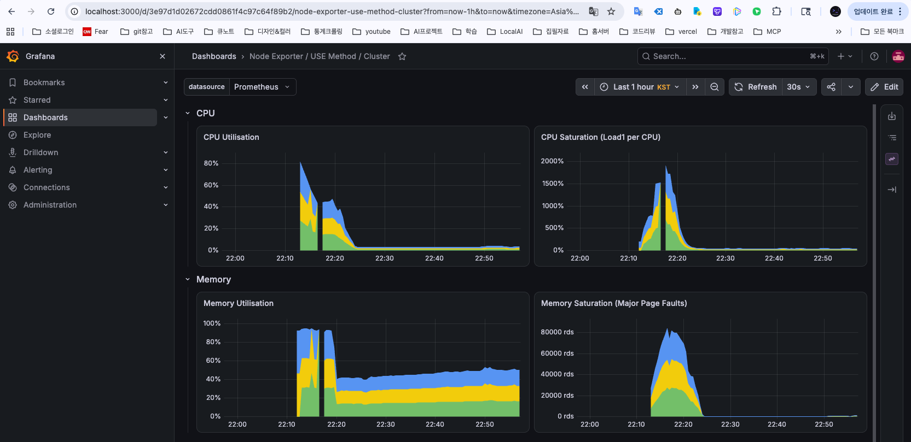
RED는 골든 시그널에서 포화도를 뺀 서비스용 방법론이다
| 골든 시그널 | 구글 SRE 책 정의 | RED | 책의 프론트엔드 질문 |
|---|---|---|---|
| 트래픽 Traffic | 시스템에 들어오는 요청량. 서비스 특성에 맞는 지표로 잰다(HTTP면 초당 요청 수) | R · Rate 초당 요청 수 | 얼마나 많은 요청을 처리하고 있나? |
| 에러 Errors | 실패한 요청의 비율. 명시적(HTTP 500), 암묵적(200인데 내용이 틀림), 정책상 실패 모두 | E · Errors 실패한 요청 수 | 사용자는 500 에러를 얼마나 받고 있나? |
| 레이턴시 Latency | 요청 처리에 걸린 시간. 성공한 요청과 실패한 요청의 시간을 나눠 본다 | D · Duration 걸린 시간(분포) | (책에 해당 질문 없음) |
| 포화도 Saturation | 서비스 자원이 한계에 얼마나 가까운지. 가장 부족한 자원을 기준으로 본다 | 없음 → USE가 맡는다 | 요청 때문에 서비스가 과도하게 사용되고 있나? |
사용자가 겪는 문제는 RED로 발견하고, 원인은 USE로 찾는다
실행 대기 줄 = run queue · 버려진 패킷 = dropped packets
스와핑 = swapping(RAM이 부족해 메모리를 디스크로 내려보냄. 느려짐) · OOM 킬 = Out Of Memory kill(메모리 부족으로 강제 종료)
평균 45ms는 빠른 요청도, 느린 요청도 대표하지 못한다
질문에 따라 봐야 할 지표가 정해진다
| 질문 | 신호 | 방법론 |
|---|---|---|
| 사용자가 지금 문제를 겪고 있나? | 메트릭 · 폐쇄형 점검 | RED · 골든 시그널 |
| 모든 요청이 느린가, 일부만 느린가? | 메트릭 · 히스토그램 | P50 / P95 / P99 |
| 어느 자원이 먼저 한계에 도달하나? | 메트릭 · 노드·컨테이너 | USE |
| 그 에러는 정확히 무엇이었나? | 로그 | 메트릭으로 범위를 좁힌 뒤 조회 |
kubectl top의 값과 프로메테우스의 값은 같은가?쿠버네티스 메트릭은 누가 만드는가
같은 파드의 메모리를 세 곳이 각각 보고한다. 출처를 구분해 두면 숫자가 서로 어긋날 때 어디가 잘못됐는지 바로 짚을 수 있다.
용어 ① 클러스터 구성요소
| 용어 | 원어 · 풀 네임 | 뜻 |
|---|---|---|
| 컨트롤 플레인 | Control plane | 클러스터 전체를 관리하는 구성요소 묶음. API 서버·etcd·스케줄러·컨트롤러 매니저 |
| API 서버 | kube-apiserver | 모든 요청(kubectl, 컨트롤러, kubelet)이 거치는 입구. 오브젝트를 읽고 쓴다 |
| etcd | etcd (분산 키-값 저장소) | 클러스터의 모든 오브젝트 상태를 저장하는 데이터베이스 |
| 스케줄러 | kube-scheduler | 새 파드를 어느 노드에 놓을지 고른다. 기준은 요청량(requests)이다 |
| 컨트롤러 매니저 | kube-controller-manager | 선언된 상태(예: replicas 3)와 실제 상태를 비교해 맞춘다 |
| kubelet | kubelet (노드 에이전트) | 각 노드에서 파드를 실행·감시하는 에이전트. 안에 cAdvisor가 들어 있다 |
| 컨테이너 런타임 | Container runtime | kubelet의 지시를 받아 컨테이너를 실제로 만들고 실행한다 |
| kube-proxy | kube-proxy | 서비스 주소로 온 트래픽을 뒤의 파드로 보내는 규칙을 노드에 설정한다 |
| CoreDNS | CoreDNS | 클러스터 안의 DNS. 서비스 이름을 IP로 바꿔 준다 |
용어 ② 메트릭 수집기
| 용어 | 원어 · 풀 네임 | 뜻 |
|---|---|---|
| cAdvisor | Container Advisor | kubelet 안에 내장된 수집기. 노드의 컨테이너별 CPU·메모리·디스크·네트워크 사용량을 잰다 |
| cgroup | Control group (리눅스 커널 기능) | 프로세스 묶음마다 CPU·메모리·I/O를 제한하고 사용량을 기록하는 커널 기능. 컨테이너 격리의 기반 |
| statfs | statfs (리눅스 시스템 콜) | 파일시스템의 전체·남은 용량을 묻는 커널 호출. cAdvisor가 디스크 사용량을 잴 때 쓴다 |
| metrics-server | Kubernetes Metrics Server | 각 kubelet에서 CPU·메모리 최근값을 모아 API 서버로 제공한다. 기록은 남기지 않는다 |
| kube-state-metrics | kube-state-metrics (KSM) | API 서버의 오브젝트 상태(replicas, 파드 단계 등)를 읽어 메트릭으로 바꾼다. 사용량은 재지 않는다 |
용어 ③ 메트릭 API와 그것을 쓰는 쪽
| 용어 | 원어 · 풀 네임 | 뜻 |
|---|---|---|
| API 집계 계층 | API Aggregation Layer · APIService | 외부 서버가 제공하는 API를 쿠버네티스 API의 일부처럼 붙이는 구조. APIService 오브젝트로 등록한다 |
| 리소스 메트릭 API | Resource Metrics API · metrics.k8s.io | 파드·노드의 CPU·메모리 사용량. metrics-server가 제공한다 |
| 커스텀 메트릭 API | Custom Metrics API · custom.metrics.k8s.io | 쿠버네티스 오브젝트에 붙은 임의 메트릭(예: 파드당 초당 요청 수). 어댑터가 제공한다 |
| 외부 메트릭 API | External Metrics API · external.metrics.k8s.io | 클러스터 밖의 메트릭(예: 메시지 큐 길이). 어댑터가 제공한다 |
| 어댑터 | Metrics adapter · 예: prometheus-adapter, KEDA | 모니터링 시스템의 값을 커스텀·외부 메트릭 API 형식으로 바꿔 주는 서버 |
| HPA | Horizontal Pod Autoscaler | 수평 파드 오토스케일러. 메트릭을 보고 파드 개수를 늘리거나 줄인다 |
| VPA | Vertical Pod Autoscaler | 수직 파드 오토스케일러. 사용량을 보고 파드의 requests·limits를 조정한다 |
구성요소마다 볼 메트릭 하나와 그 값이 나빠질 때 생기는 일
| 위치 | 구성요소 | 대표 메트릭 | 이 값이 나빠지면 |
|---|---|---|---|
| 컨트롤 플레인 | API 서버 | apiserver_request_duration_seconds | API 요청 처리가 느려져 kubectl·컨트롤러가 모두 느려진다 |
| 컨트롤 플레인 | etcd | etcd_disk_wal_fsync_duration_seconds | 디스크 쓰기 확정이 늦어져 API 서버 전체가 느려진다 |
| 컨트롤 플레인 | 스케줄러 | scheduler_pending_pods | 노드를 배정받지 못한 파드가 쌓인다 |
| 컨트롤 플레인 | 컨트롤러 매니저 | workqueue_depth | 처리 대기 작업이 쌓여 replicas 변경 같은 반영이 늦어진다 |
| 노드 | kubelet (cAdvisor) | container_memory_working_set_bytes | 컨테이너 메모리가 limit에 닿으면 OOM 킬로 재시작된다 |
| 노드 | kube-proxy | kubeproxy_sync_proxy_rules_duration_seconds | 서비스 규칙 갱신이 늦어져 새 파드로 트래픽이 늦게 간다 |
| 노드 | CoreDNS | coredns_dns_request_duration_seconds | 이름 조회가 느려져 서비스 간 호출 전체가 느려진다 |
| 노드 | 파드 (앱) | http_server_requests_seconds | 사용자 요청의 처리율·에러·지연(RED)이 나빠진다 |
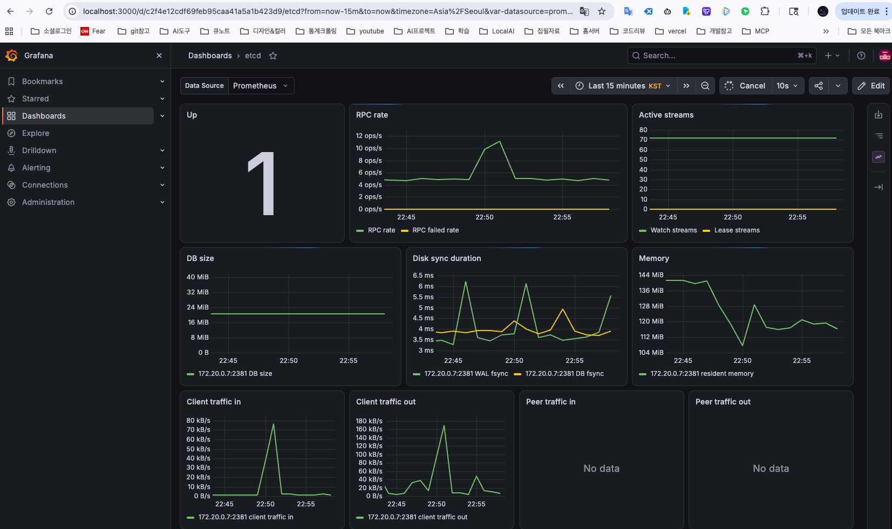
사용량은 cAdvisor가 재고, 두 길로 나간다
cAdvisor: 컨테이너가 실제로 얼마나 쓰는지 잰다
# 프로메테우스에 order-api 메모리를 묻는다
container_memory_working_set_bytes{
namespace="apps", container="order-api"}
# 결과 order-api-8556fcb49b-7gv2m 174Mi order-api-8556fcb49b-ctm7c 183Mi
파드 접미사와 값은 환경마다 다르다.
| 메트릭 | 뜻 |
|---|---|
| container_memory_ working_set_bytes | 지금 실제로 붙잡고 있는 메모리. OOM 킬 판정에 쓰이는 값 |
| container_cpu_ usage_seconds_total | CPU를 쓴 누적 초. rate()로 감싸야 초당 사용량(코어)이 된다 |
| container_network_ receive_bytes_total | 받은 네트워크 바이트 누적 |
container_로 시작하면 cAdvisor에서 온 값이다.metrics-server는 오토스케일링 전용이다
# 등록된 메트릭 API 확인
kubectl get apiservices | grep metrics
# 결과 v1beta1.metrics.k8s.io kube-system/metrics-server True
kubectl top pod -n apps
NAME CPU(cores) MEMORY(bytes) order-api-8556fcb49b-7gv2m 5m 174Mi order-api-8556fcb49b-ctm7c 4m 182Mi
하는 일
각 kubelet에서 CPU·메모리를 15초마다 읽어 최근값 하나만 메모리에 둔다. 이를 metrics.k8s.io로 제공한다.
쓰는 쪽
HPA · VPA · kubectl top. 공식 README는 "모니터링 데이터의 출처로 쓰지 말라"고 적는다.
CPU·메모리 말고 다른 값으로도 스케일링할 수 있다
| API 그룹 | 무엇을 담나 | 누가 제공하나 | HPA에서 쓰는 예 |
|---|---|---|---|
| metrics.k8s.io | 파드·노드의 CPU·메모리 | metrics-server | CPU 사용률 70% 유지 |
| custom.metrics.k8s.io | 쿠버네티스 오브젝트에 붙은 메트릭 | 어댑터(prometheus-adapter 등) | 파드당 초당 요청 수 100 유지 |
| external.metrics.k8s.io | 클러스터 밖의 메트릭 | 어댑터(KEDA 등) | 메시지 큐 대기 건수 30 유지 |
# HPA 스펙 일부: 외부 메트릭(큐 길이)으로 스케일링 - type: External external: metric: name: queue_messages_ready selector: matchLabels: {queue: worker_tasks} target: {type: AverageValue, averageValue: 30}
kube-state-metrics: 책의 질문을 메트릭 이름으로 바꾼다
| 대상 | 책의 질문 | 메트릭 |
|---|---|---|
| 파드 | 몇 개 배포됐나? 대기 상태는 몇 개인가? | kube_pod_info · kube_pod_status_phase{phase="Pending"} |
| 디플로이먼트 | 의도한 개수 대비 몇 개가 실행 중인가? | kube_deployment_spec_replicas 대 kube_deployment_status_replicas_available |
| 디플로이먼트 | 업데이트가 끝났나? | kube_deployment_metadata_generation 대 kube_deployment_status_observed_generation |
| 노드 | 상태는? 할당 가능한 CPU는? 스케줄 불가 노드는? | kube_node_status_condition · kube_node_status_allocatable · kube_node_spec_unschedulable |
| 잡 | 언제 시작·완료됐나? 몇 개 실패했나? | kube_job_status_start_time · kube_job_status_completion_time · kube_job_status_failed |
kube_로 시작하면 KSM이다.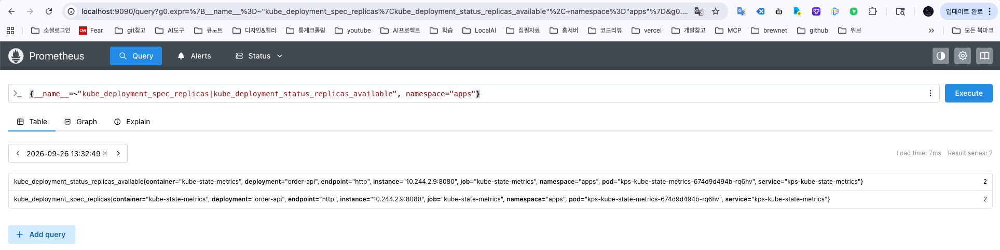
메트릭 이름의 앞부분이 출처를 알려 준다
| 출처 | 무엇을 말하나 | 어디서 읽나 | 이름 | 보관 | 쓰는 쪽 |
|---|---|---|---|---|---|
| cAdvisor | 실제로 얼마나 쓰나 | cgroup | container_ | 프로메테우스에 시계열 | 대시보드 · 알림 |
| metrics-server | CPU·메모리 최근값 | kubelet | (메트릭 이름 없음, API 객체) | 최근값 하나 | kubectl top · HPA · VPA |
| kube-state-metrics | 무엇이라고 선언돼 있나 | API 서버 | kube_ | 프로메테우스에 시계열 | 대시보드 · 알림 |
| 애플리케이션 | 앱이 무슨 일을 했나 | 앱 코드(계측) | 앱마다 다름 (http_server_) | 프로메테우스에 시계열 | RED 대시보드 · 알림 |
| node-exporter | 노드(머신) 자원 | 리눅스 커널 | node_ | 프로메테우스에 시계열 | USE 대시보드 · 알림 |
kubectl top과 프로메테우스는 같은 kubelet에서 읽는다
order-api-…-7gv2m 5m 174Mi order-api-…-ctm7c 4m 182Mi
15초마다 읽은 최근값 하나. 한 시간 전 값은 물어볼 곳이 없다.
order-api-…-7gv2m 174Mi order-api-…-ctm7c 183Mi
30초마다 긁어 3일치를 쌓는다. 어제 같은 시각과 비교할 수 있다.
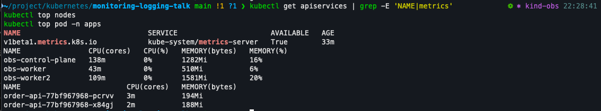
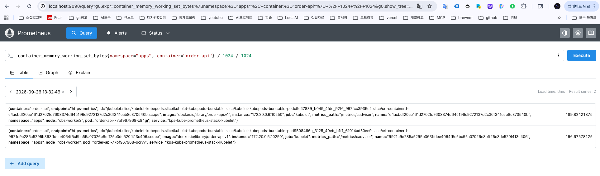
계층별 확인 항목과 메트릭
| 계층 | 확인 항목 | 메트릭 이름 |
|---|---|---|
| ① 노드 | CPU 사용률 | node_cpu_seconds_total |
| 메모리 여유 | node_memory_MemAvailable_bytes | |
| 네트워크 송수신량 | node_network_receive_bytes_total · node_network_transmit_bytes_total | |
| 디스크 여유 공간 | node_filesystem_avail_bytes | |
| ② 클러스터 컴포넌트 | etcd 디스크 쓰기 지연 | etcd_disk_wal_fsync_duration_seconds |
| API 서버 요청 지연 | apiserver_request_duration_seconds | |
| ③ 클러스터 애드온 | 클러스터 오토스케일러: 배치 못 한 파드 | cluster_autoscaler_unschedulable_pods_count |
| 인그레스 컨트롤러: 요청 수 | nginx_ingress_controller_requests (ingress-nginx) | |
| ④ 애플리케이션 | 컨테이너 메모리 | container_memory_working_set_bytes |
| 컨테이너 CPU | container_cpu_usage_seconds_total | |
| 컨테이너 네트워크 에러 | container_network_receive_errors_total | |
| 프레임워크 메트릭 (요청 수·지연) | http_server_requests_seconds (Spring Boot) |
파드가 Pending일 때 노드에서 컴포넌트로 좁혀 가는 순서
| 단계 | 메트릭 · 명령 | 이렇게 판단한다 |
|---|---|---|
| 증상 | kube_pod_status_phase{phase="Pending"} | 0보다 크면 배치되지 못한 파드가 있다. ①로 간다 |
| ① 노드 | kube_node_status_allocatable 대 requests 합 | 남은 자리가 파드 requests보다 작으면 원인은 노드 부족. 자리가 있으면 ②로 간다 |
| ② 스케줄러 | up{job="kube-scheduler"} | 0이면 스케줄러가 멈춰 있다. 1이면 아래 줄을 본다 |
scheduler_pending_pods{queue="unschedulable"} | 늘고 있으면 스케줄러는 시도했지만 맞는 노드가 없다(노드 셀렉터·taint·어피니티 조건) | |
| ② API 서버 | apiserver_request_duration_seconds | 느리면 배치 결과 기록이 늦어진다. etcd 쓰기 지연을 이어서 본다 |
| 원인 확인 | kubectl describe pod <이름> | FailedScheduling 이벤트 메시지가 이유를 그대로 알려 준다 |
같은 파드를 두고 세 출처가 다른 것을 말한다
| 질문 | 답 |
|---|---|
| 메트릭은 누가 만드나? | 사용량 cAdvisor(container_) · 상태 KSM(kube_) · 노드 node-exporter(node_) · 앱 자신 |
| metrics-server는 어디에 들어가나? | 전달자. kubelet의 최근값을 HPA·VPA·kubectl top에 준다. 모니터링용 아님 |
| kubectl top과 프로메테우스 값은 같은가? | 값은 같다(174Mi 대 174Mi). 다른 것은 보관: 최근값 하나 대 3일치 시계열 |
| 무엇부터 보나? | 노드 → 클러스터 컴포넌트 → 애드온 → 애플리케이션 순서로 좁힌다 |
메트릭을 모으는 도구와 프로메테우스의 동작 방식
여러 출처의 메트릭을 한곳에 모으는 도구를 비교하고, 프로메테우스가 대상을 찾아 긁어 오고 저장하는 구조를 본다.
용어 ① 모니터링 도구
| 용어 | 원어 · 풀 네임 | 뜻 |
|---|---|---|
| InfluxDB | InfluxDB · TICK 스택의 저장소 | 시계열 DB. TICK = Telegraf 수집 · InfluxDB 저장 · Chronograf 시각화 · Kapacitor 알림 |
| Datadog | Datadog | SaaS 전용 모니터링. 노드마다 에이전트를 두고 데이터를 벤더 저장소로 보낸다 |
| Sysdig Monitor | Sysdig Monitor | 상용 모니터링. SaaS와 설치형(온프렘) 모두 제공. 프로메테우스 메트릭 수집·질의 |
| SaaS | Software as a Service | 서비스형 소프트웨어. 설치·운영은 벤더가 하고 사용자는 구독해서 쓴다 |
| 관리형 서비스 | Managed service | 클라우드 사업자가 운영하는 서비스. 예: CloudWatch Container Insights, Azure Monitor |
| CNCF | Cloud Native Computing Foundation | 클라우드 네이티브 오픈소스 재단. 쿠버네티스·프로메테우스가 졸업(Graduated) 프로젝트 |
| 다차원 데이터 모델 | Multidimensional data model | 메트릭 하나를 여러 라벨(차원)로 나눠 저장하는 방식. 라벨 조합마다 별도 시계열이 된다 |
용어 ② 프로메테우스 구조
| 용어 | 원어 · 풀 네임 | 뜻 |
|---|---|---|
| 익스포터 | Exporter | 다른 시스템의 상태를 읽어 프로메테우스 형식으로 내놓는 프로그램. 예: node-exporter |
| 노출 형식 | Exposition format | 메트릭을 HTTP로 보여 주는 텍스트 형식. # HELP·# TYPE 줄과 이름{라벨} 값 줄 |
| 샘플 | Sample | 저장의 최소 단위. float64 값 하나 + 밀리초 단위 시각 |
| 서비스 디스커버리 | Service discovery | 긁을 대상 목록을 외부(쿠버네티스 API 등)에서 자동으로 받아 오는 기능 |
| Pushgateway | Prometheus Pushgateway | 금방 끝나는 배치 잡이 값을 밀어 넣어 두는 곳. 프로메테우스가 대신 긁는다 |
| 오퍼레이터 | Operator | 특정 소프트웨어의 설치·설정을 쿠버네티스 리소스로 관리해 주는 컨트롤러 |
| CRD | Custom Resource Definition | 쿠버네티스에 새 리소스 종류를 추가하는 정의. 예: ServiceMonitor |
| ServiceMonitor | ServiceMonitor (CRD) | "라벨이 X인 서비스의 포트 Y를 긁어라"를 적는 리소스 |
| PrometheusRule | PrometheusRule (CRD) | 알림 규칙과 기록 규칙을 담는 리소스 |
프로메테우스의 라벨에 쿠버네티스 정보가 그대로 붙는다
# 프로메테우스에 저장된 order-api 메모리 시계열 하나의 라벨 (실측, 일부) container_memory_working_set_bytes{ namespace="apps", pod="order-api-77bf967968-g247f", container="order-api", node="obs-worker", image="docker.io/library/order-api:v1", job="kubelet", metrics_path="/metrics/cadvisor", instance="172.20.0.2:10250" }
쿠버네티스에서 온 라벨
namespace · pod · container · node. 쿠버네티스에서 쓰던 이름으로 그대로 나눠 본다.
수집 과정에서 붙은 라벨
job(어느 수집 설정인가) · instance(어느 주소에서 긁었나) · metrics_path.
그래서 가능한 질의
"apps 네임스페이스 전체", "obs-worker 노드 위의 컨테이너"처럼 라벨로 골라 합친다.
메트릭은 사람이 읽을 수 있는 텍스트로 노출된다
# node-exporter의 /metrics 응답 (실측, 일부) # HELP node_cpu_seconds_total Seconds the CPUs spent in each mode. # TYPE node_cpu_seconds_total counter node_cpu_seconds_total{cpu="0",mode="idle"} 1.76328028e+06 node_cpu_seconds_total{cpu="0",mode="iowait"} 59525.98 node_cpu_seconds_total{cpu="0",mode="irq"} 0 node_cpu_seconds_total{cpu="0",mode="nice"} 0 ...
| 부분 | 뜻 |
|---|---|
| # HELP | 메트릭 설명 |
| # TYPE | 메트릭 타입. 여기서는 counter(계속 증가) |
| 이름 | node_cpu_seconds_total: CPU가 쓴 누적 초 |
| {라벨} | cpu 번호 × mode(idle, iowait …) 조합마다 별도 시계열 |
| 값 | 긁는 순간의 숫자. 프로메테우스가 시각을 붙여 샘플로 저장 |
메트릭 타입 4가지와 각각을 읽는 방법
| 타입 | 값의 성질 | 예 | 읽는 방법 |
|---|---|---|---|
| Counter | 늘기만 한다. 재시작하면 0부터 | node_cpu_seconds_total | rate()로 초당 증가량을 본다 |
| Gauge | 오르내린다. 지금 상태 | node_memory_MemAvailable_bytes | 값을 그대로 본다. rate()를 쓰지 않는다 |
| Histogram | 값을 구간(버킷)별로 센 누적 개수 | http_server_requests_seconds_bucket | histogram_quantile()로 P99 |
| Summary | 앱이 분위수를 미리 계산해 내놓음 | (order-api는 쓰지 않음) | 파드끼리 평균 내면 틀린 값 |
프로메테우스 서버 안에서 다섯 가지 일이 일어난다
가져오는 방식(pull)은 대상이 죽었는지를 수집 자체로 안다
# 긁기에 성공하면 1, 실패하면 0 (실측) up{job="order-api", pod="order-api-…-g247f"} 1 up{job="order-api", pod="order-api-…-pjnk8"} 1
얻는 것
대상마다 up 시계열이 자동으로 생긴다. 응답이 없으면 0이 되므로 "죽었다"와 "한가하다"가 구분된다.
대가 ①
프로메테우스가 대상에 네트워크로 닿아야 한다. 방화벽·네트워크 정책이 막으면 수집이 안 된다.
대가 ②
수십 초 만에 끝나는 배치 잡은 긁으러 갈 때 이미 없다. 이때는 Pushgateway에 값을 남긴다.
대가 ③
30초 간격 샘플이라 요청 하나하나를 세는 과금처럼 100% 정확도가 필요한 용도에는 맞지 않는다.
쿠버네티스 API에서 대상을 찾는 6가지 방법
| 역할 (role) | 무엇을 대상으로 만드나 | 주로 쓰는 곳 |
|---|---|---|
| node | 노드마다 대상 하나 (kubelet 주소) | kubelet · cAdvisor |
| service | 서비스의 포트마다 대상 하나 | 서비스 주소로 외부 점검(블랙박스) |
| pod | 파드의 컨테이너 포트마다 대상 하나 | 서비스 없이 파드를 직접 긁을 때 (PodMonitor) |
| endpoints | 서비스 뒤의 실제 파드 주소마다 대상 하나 | 서비스로 묶인 앱 (ServiceMonitor 기본값) |
| endpointslice | endpoints와 같고 EndpointSlice API를 쓴다 | endpoints의 후속. 공식 문서가 전환을 권장 |
| ingress | 인그레스의 경로마다 대상 하나 | 외부 URL 점검(블랙박스) |
__meta_kubernetes_* 라벨로 함께 따라온다. 앞에서 본 namespace·pod 라벨은 여기서 옮겨 붙인 것이다.kube-prometheus-stack 차트 하나로 6가지 구성요소가 뜬다
| 구성요소 | 하는 일 (책 3.7) | 실제 파드 이름 |
|---|---|---|
| 프로메테우스 서버 | 수집한 메트릭을 가져와 저장 | prometheus-kps-kube-prometheus-stack-prometheus-0 |
| 프로메테우스 오퍼레이터 | 프로메테우스·Alertmanager를 쿠버네티스 리소스로 관리 | kps-kube-prometheus-stack-operator-… |
| 노드 익스포터 | 노드의 호스트 메트릭을 내놓음 | kps-prometheus-node-exporter-… × 3 (노드마다) |
| kube-state-metrics | 쿠버네티스 오브젝트 상태 메트릭 | kps-kube-state-metrics-… |
| Alertmanager | 알림을 받아 외부로 전달 | alertmanager-kps-kube-prometheus-stack-alertmanager-0 |
| Grafana | 메트릭을 대시보드로 시각화 | kps-grafana-… |
-0은 StatefulSet으로 떠 있다는 표시다.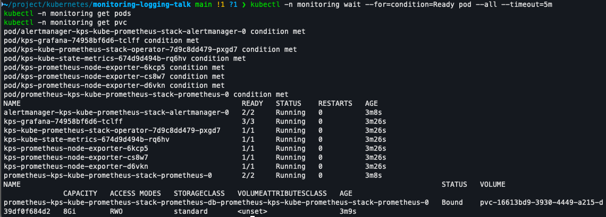
수집 설정을 YAML 리소스로 적으면 오퍼레이터가 설정 파일을 만든다
"라벨 app=order-api 서비스의 http 포트를 긁어라"
CRD 변경을 watch 하고 있다
프로메테우스 설정 파일에 잡 추가
설정을 다시 읽고 긁기 시작
# 오퍼레이터가 만든 설정 (실측, 일부) - job_name: serviceMonitor/apps/order-api/0 kubernetes_sd_configs: - role: endpoints
| 주요 CRD | 담는 것 |
|---|---|
| Prometheus | 프로메테우스 서버 자체(보존 기간, 자원) |
| ServiceMonitor · PodMonitor | 무엇을 긁을지 |
| PrometheusRule | 알림·기록 규칙 |
| Alertmanager | Alertmanager 서버 자체 |
ServiceMonitor는 세 군데가 맞아야 서비스를 찾는다
ServiceMonitor · 무엇을 긁을지
apiVersion: monitoring.coreos.com/v1 kind: ServiceMonitor metadata: name: order-api namespace: apps labels: release: kps # ① 프로메테우스가 고르는 라벨spec: selector: matchLabels: app.kubernetes.io/name: order-api # ② 서비스 라벨 namespaceSelector: matchNames: [apps] endpoints: - port: http # ③ 서비스 포트 이름 path: /actuator/prometheus interval: 30s scrapeTimeout: 10s
Service · order-api 앞에 있는 서비스
kind: Service metadata: name: order-api namespace: apps labels: app.kubernetes.io/name: order-api # ②spec: ports: - name: http # ③ port: 8080
Prometheus 리소스 · 어떤 ServiceMonitor를 읽을지
spec: serviceMonitorSelector: matchLabels: release: kps # ①
ServiceMonitor 한 칸이 수집 설정 한 줄로 바뀐다
우리가 적은 것 · ServiceMonitor (일부)
spec: selector: matchLabels: app.kubernetes.io/name: order-api # A namespaceSelector: matchNames: [apps] # B endpoints: - port: http # C path: /actuator/prometheus # D interval: 30s # E scrapeTimeout: 10s
오퍼레이터가 만든 것 · 프로메테우스 설정 (실측, 일부)
- job_name: serviceMonitor/apps/order-api/0 kubernetes_sd_configs: - role: endpoints namespaces: {names: [apps]} # B scrape_interval: 30s # E scrape_timeout: 10s metrics_path: /actuator/prometheus # D relabel_configs: - action: keep # A source_labels: - __meta_kubernetes_service_label_app_kubernetes_io_name regex: (order-api);true - action: keep # C source_labels: [__meta_kubernetes_endpoint_port_name] regex: http - source_labels: [__meta_kubernetes_namespace] target_label: namespace # 라벨 붙이기 - source_labels: [__meta_kubernetes_pod_name] target_label: pod ... (container · service · job 라벨, 샤딩 규칙)
프로메테우스는 찾고, 가져오고, 저장하고, 평가한다
| 질문 | 답 |
|---|---|
| 어떤 도구로 모으나? | 프로메테우스. 라벨 기반 저장이 쿠버네티스 라벨과 같고, 구성요소가 이미 이 형식을 쓴다 |
| 대상을 어떻게 찾나? | 쿠버네티스 API에서 서비스 디스커버리(role: endpoints 등)로 자동 발견 |
| 무엇을 저장하나? | 이름 + 라벨 = 시계열. 샘플 = 값 + 시각. 타입은 counter·gauge·histogram·summary |
| 수집 설정은 누가 쓰나? | ServiceMonitor 리소스를 적으면 오퍼레이터가 설정 파일로 바꾼다 |
스택을 설치하고, 정상인 화면을 읽는다
kube-prometheus-stack을 설치한 뒤 무엇이 보이면 정상인지 확인한다. Prometheus와 Grafana의 화면을 어떤 질문에 어느 메뉴로 답하는지 익힌다.
용어 설치와 확인에 쓰는 것
| 용어 | 원어 · 풀 네임 | 뜻 |
|---|---|---|
| Helm | Helm (쿠버네티스 패키지 관리자) | 여러 매니페스트를 묶은 패키지를 설치·업그레이드·삭제하는 도구 |
| 차트 | Chart | Helm 패키지. 매니페스트 템플릿과 기본 설정값의 묶음 |
| 릴리스 | Release | 차트를 클러스터에 설치한 한 벌. 이름을 붙인다(여기서는 kps) |
| 값 파일 | Values file | 차트 기본값을 덮어쓰는 설정 파일. -f로 넘긴다 |
| 포트 포워드 | Port forward (kubectl port-forward) | 내 PC의 포트를 클러스터 안 서비스로 이어 주는 임시 터널 |
| PVC | PersistentVolumeClaim | 저장 공간을 달라는 요청서. 파드가 재시작돼도 데이터가 남는다 |
| 타깃 | Target (수집 대상) | 프로메테우스가 긁어 가는 주소 하나. 상태는 up 또는 down |
| up 메트릭 | up | 타깃마다 하나씩 생기는 시계열. 마지막 수집이 성공하면 1, 실패하면 0 |
| 바인드 주소 | Bind address | 프로그램이 연결을 받는 주소. 127.0.0.1(루프백)이면 자기 노드 안에서만, 0.0.0.0이면 어디서든 접근 가능 |
컨트롤 플레인 메트릭은 클러스터를 만들 때 열어 둔다
labs/kind-cluster.yaml (일부)
kubeadmConfigPatches: - | kind: ClusterConfiguration controllerManager: extraArgs: - {name: bind-address, value: "0.0.0.0"} scheduler: extraArgs: - {name: bind-address, value: "0.0.0.0"} etcd: local: extraArgs: - {name: listen-metrics-urls, value: "http://0.0.0.0:2381"} - | kind: KubeProxyConfiguration metricsBindAddress: "0.0.0.0:10249"
왜 필요한가
kubeadm 기본값은 네 구성요소(컨트롤러 매니저 · 스케줄러 · etcd · kube-proxy)가 메트릭 포트를 127.0.0.1에만 연다. 다른 노드에 있는 프로메테우스는 닿지 못한다.
열면 보이는 것
etcd 디스크 지연(etcd_disk_wal_fsync_duration_seconds), 스케줄 대기(scheduler_pending_pods), 컨트롤러 작업 큐(workqueue_depth). 2장 "컴포넌트" 계층의 메트릭이다.
차트 기본값 대신 보존 기간·저장소·배치를 정한다
labs/helm/kps-values.yaml (일부)
prometheus: prometheusSpec: nodeSelector: {workload: observability} scrapeInterval: 30s retention: 3d retentionSize: 4GB storageSpec: volumeClaimTemplate: spec: resources: {requests: {storage: 8Gi}}grafana: adminPassword: obs-study grafana.ini: plugins: {preinstall_auto_update: false} resources: limits: {memory: 1Gi}
| 값 | 왜 |
|---|---|
| scrapeInterval 30s | 짧을수록 해상도가 오르고 저장량도 오른다. 15초면 저장량이 두 배 |
| retention 3d · 4GB | 둘 중 먼저 닿는 쪽에서 오래된 데이터를 지운다. 며칠 전 장애까지 되짚을지가 이 값 |
| storageSpec 8Gi | 없으면 emptyDir. 파드가 재시작되면 쌓은 메트릭이 전부 사라진다 |
| nodeSelector | 관측 스택을 한 노드에 모은다. 관측 대상이 앓을 때 같이 앓지 않게 |
| preinstall_auto_update | Grafana가 기동할 때 내장 플러그인을 업데이트하지 않게 한다 |
| Grafana 메모리 1Gi | 대시보드 몇 개를 열면 850Mi 안팎까지 쓴다(실측) |
따라하기 ① 클러스터부터 스택 설치까지
| # | 명령 | 화면에서 볼 것 |
|---|---|---|
| 1 | kind create cluster --config labs/kind-cluster.yaml | 체크 표시 7개, 컨텍스트 kind-obs |
| 2 | kind load docker-image journal-api:v1 order-api:v1 --name obskubectl apply -f labs/k8s/journal.yaml -f labs/k8s/order-api.yaml | journal-api 3 · order-api 2 Running |
| 3 | kubectl label node obs-worker2 workload=observability | 관측 스택을 올릴 노드 지정 |
| 4 | helm upgrade --install kps prometheus-community/kube-prometheus-stack \ -n monitoring --create-namespace --version 89.2.2 \ -f labs/helm/kps-values.yaml --wait | 약 1분 |
| 5 | kubectl -n monitoring wait --for=condition=Ready pod --all --timeout=5m | Prometheus · Alertmanager까지 준비 |
| 6 | kubectl -n monitoring get pods,pvc | 파드 8개 Running (node-exporter 3), PVC 8Gi Bound |
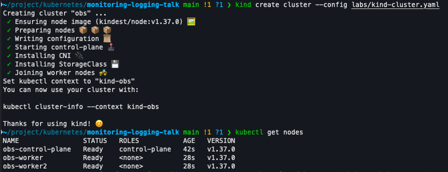
설치 성공의 기준은 타깃 28개가 모두 up인 것
| 묶음 | job | 개수 | 여기서 오는 것 |
|---|---|---|---|
| 노드 · 컨테이너 | kubelet | 9 | 노드 3대 × 경로 3개(/metrics · /metrics/cadvisor · /metrics/probes). cAdvisor 컨테이너 메트릭이 여기서 |
node-exporter | 3 | 노드마다 하나. CPU · 메모리 · 디스크 · 네트워크 | |
| 쿠버네티스 상태 | kube-state-metrics | 1 | 디플로이먼트 · 파드 · 노드 오브젝트의 상태(kube_*) |
| 컨트롤 플레인 | apiserver · kube-controller-manager · kube-scheduler · kube-etcd | 4 | API 요청 · 컨트롤러 큐 · 스케줄 대기 · etcd 디스크 지연 |
kube-proxy · coredns | 3 + 2 | 서비스 규칙 동기화 · DNS 질의 | |
| 스택 자신 | prometheus · alertmanager · operator · grafana | 2+2+1+1 | 관측 도구가 스스로 건강한지 |
count(up) = 28, sum(up) = 28이면 정상. 파드가 Running이어도 타깃이 down이면 그 구성요소의 메트릭은 없다.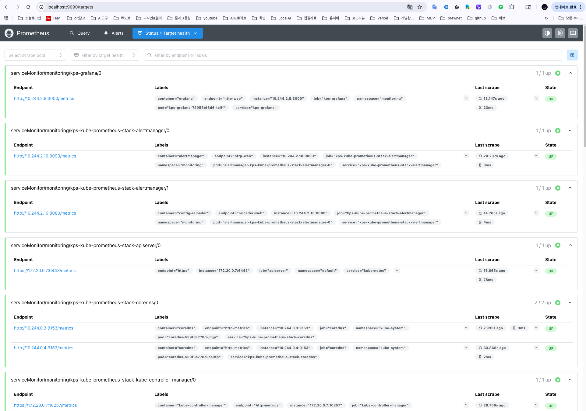
Prometheus 화면은 질문에 따라 메뉴를 고른다
| 메뉴 | 이런 질문일 때 | 사용법 |
|---|---|---|
| Status → Target health | 수집이 되고 있나? 어디가 끊겼나? | 묶음(scrape pool)별 n / n up. 필터 Unhealthy로 문제 있는 것만. DOWN 행에 마지막 에러가 보인다 |
| Query → Table | 지금 값은 얼마인가? | 질의 결과의 최신값 한 줄씩. 라벨 전체가 보여 어느 파드 · 노드인지 확인할 때 |
| Query → Graph | 언제부터 변했나? 추세는? | 시간 범위를 고르고 선으로 본다. rate() · histogram_quantile() 결과를 볼 때 |
| Alerts | 지금 울리는 알림은? | 규칙별 inactive · pending · firing(6장) |
| Status → Rule health | 알림 규칙이 로드됐나? | 규칙 그룹과 평가 상태 · 마지막 평가 시각 |
| Status → Configuration | 실제로 어떤 설정으로 긁나? | 오퍼레이터가 만든 scrape_configs 전체(3장) |
따라하기 ② 같은 파드를 세 출처로 본다
| # | 명령 · 질의 | 볼 것 (기준값) |
|---|---|---|
| 1 | kubectl top pod -n apps | metrics-server: 파드 2개, 메모리 150~200Mi |
| 2 | Query: container_memory_working_set_bytes{namespace="apps", container="order-api"} / 1024 / 1024 | cAdvisor: 1번과 같은 값(MiB) |
| 3 | Query: {__name__=~"kube_deployment_spec_replicas|kube_deployment_status_replicas_available", namespace="apps"} | kube-state-metrics: 의도 2 · 실제 2 |
| 4 | Query: container_memory_working_set_bytes{namespace="apps", container="order-api"} (Table) | 라벨 namespace · pod · node · image가 붙어 있다 |
container_로 시작하면 cAdvisor, kube_로 시작하면 kube-state-metrics, kubectl top은 metrics-server. 쓰임새: 지금 값은 kubectl top, 지난 흐름은 cAdvisor, 의도와 실제의 차이는 kube-state-metrics.Grafana 기본 대시보드는 질문별로 하나씩 연다
| 대시보드 | 이런 질문일 때 | 볼 패널 |
|---|---|---|
| Kubernetes / Compute Resources / Pod | 이 파드가 자원을 얼마나 쓰나? 한도에 가까운가? | Memory Usage (WSS) · requests · limits 점선, CPU Throttling |
| Kubernetes / Compute Resources / Namespace (Pods) | 네임스페이스 안에서 누가 많이 쓰나? | 파드별 CPU · 메모리 표 |
| Node Exporter / USE Method / Cluster | 클러스터 전체가 모자라나? | CPU · 메모리의 Utilisation(사용률)과 Saturation(포화도) |
| etcd | API가 느린데 저장소 탓인가? | Disk sync duration(WAL fsync), RPC rate |
| Kubernetes / API server | API 서버가 에러를 내나? | Availability, 요청 수 · 에러 · 지연 |
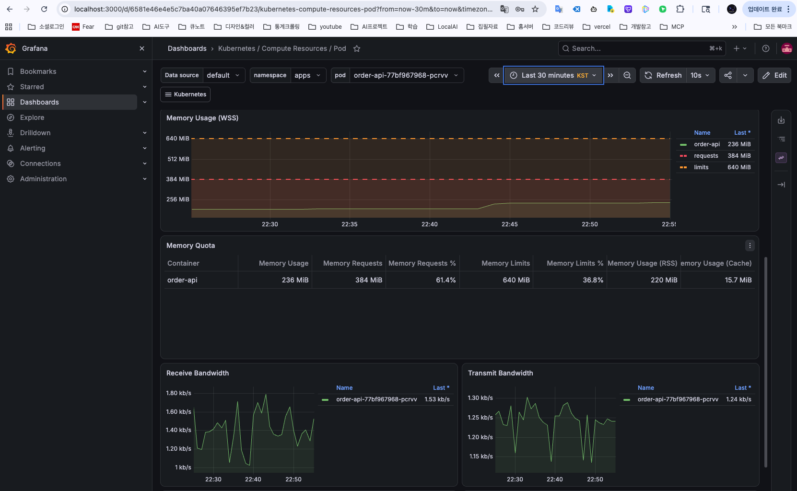
설치에서 자주 막히는 곳 다섯
| 증상 | 원인 | 해결 |
|---|---|---|
Target health에 DOWN 6개, connection refused | 컨트롤 플레인 메트릭이 127.0.0.1에만 열려 있다 | kind 설정의 kubeadmConfigPatches로 클러스터를 다시 만든다 |
| 설치 중 파드가 Pending · OOMKilled | Docker 메모리 부족. 다른 kind 클러스터가 같이 떠 있다 | Docker 메모리 8GB 이상, kind get clusters로 다른 클러스터를 멈춘다 |
| Grafana 모든 패널 No data, datasource 옆 경고 | Prometheus 플러그인이 내려갔다(자동 업데이트 실패) | 값 파일 preinstall_auto_update: false로 다시 설치 |
브라우저에 Failed to fetch | Grafana OOMKilled 재시작, 또는 port-forward 끊김 | 메모리 한도 1Gi, port-forward를 다시 띄운다 |
count(up) 31, down 3 | kube-proxy 파드가 막 바뀌어 옛 타깃이 남았다 | 1분 뒤 다시 센다 |
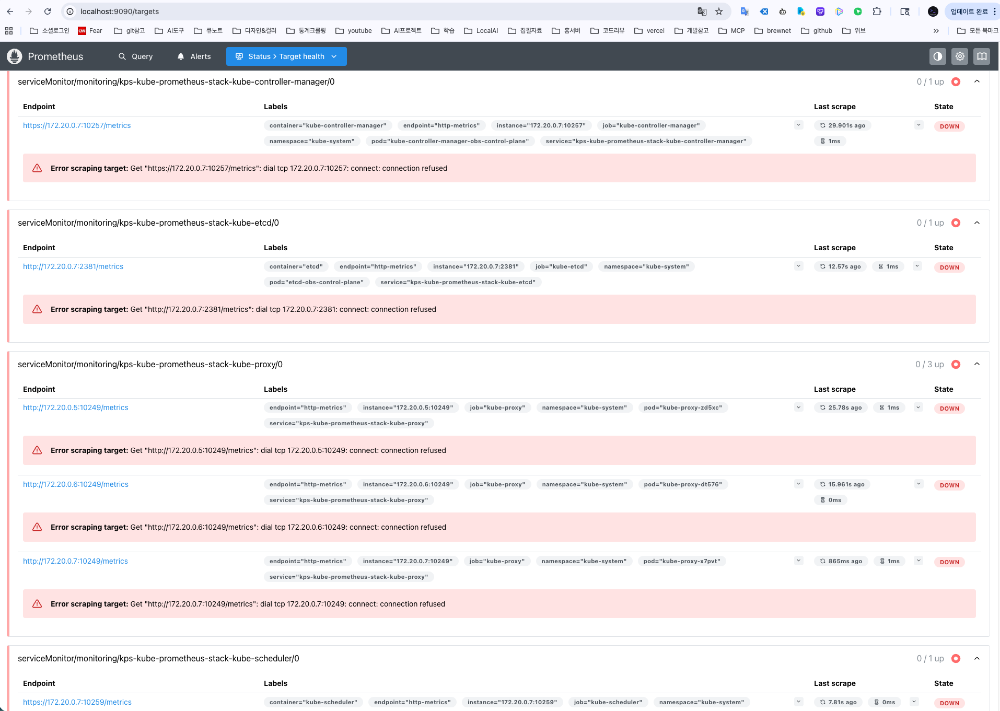
설치가 끝났다고 말할 수 있는 명령과 기대값
| 명령 · 화면 | 기대값 |
|---|---|
kubectl -n monitoring get pods,pvc | 8개 Running, 8Gi PVC Bound |
Query: count(up) · sum(up) | 28 · 28 |
| Status → Target health, 필터 Unhealthy | 목록이 비어 있다 |
kubectl top pod -n apps 대 cAdvisor 질의 | order-api 파드 2개, 같은 메모리 값 |
| Grafana → Kubernetes / Compute Resources / Pod | order-api 메모리 패널에 선과 requests · limits 점선 |
| Grafana → Node Exporter / USE Method / Cluster | CPU · 메모리 사용률과 포화도 패널에 선 |
/actuator/prometheus로 메트릭을 내놓고 있는데 Query에 http_server_requests_seconds_count를 넣으면 결과가 없다. 앱은 어떻게 연결하나?앱을 연결하고 PromQL로 RED를 읽는다
앱이 내놓는 메트릭을 ServiceMonitor로 수집 대상에 올리고, 요청률 · 에러율 · 지연을 PromQL로 뽑는다. 평균 대신 분위수로 보고, 라벨로 쪼개 원인을 좁히는 법을 익힌다.
용어 계측과 질의
| 용어 | 원어 · 풀 네임 | 뜻 |
|---|---|---|
| 계측 | Instrumentation | 앱 코드가 스스로 메트릭을 만들어 내놓게 하는 일 |
| Micrometer | Micrometer (JVM 메트릭 라이브러리) | Spring Boot가 쓰는 계측 라이브러리. HTTP 요청 메트릭을 자동으로 만든다 |
| 액추에이터 | Spring Boot Actuator | 운영용 엔드포인트 모음. /actuator/prometheus가 메트릭을 내놓는다 |
| prom-client | prom-client (Node.js 라이브러리) | Node 앱에서 프로메테우스 메트릭을 직접 만드는 라이브러리 |
| rate() | PromQL 함수 | 카운터의 초당 증가량. 카운터는 늘기만 하므로 증가 속도가 의미다 |
| histogram_quantile() | PromQL 함수 | 히스토그램 버킷으로 분위수(P50·P99)를 추정한다 |
| le | less than or equal | 히스토그램 버킷의 경계 라벨. le="0.1" = 0.1초 이하 요청 수 |
| 카디널리티 | Cardinality | 메트릭 하나가 만드는 시계열 수. 라벨 값 조합이 늘수록 커진다 |
| k6 | Grafana k6 | 부하 생성 도구. 초당 요청 수를 정해 시나리오를 돌린다 |
앱은 HTTP 엔드포인트로 메트릭을 내놓는다
// order-api · OrderService.java (일부) Counter.builder("orders.created") .tag("channel", "api").register(registry); Timer.builder("orders.processing") .publishPercentileHistogram().register(registry);
# 엔드포인트에서 이름 확인 curl -s localhost:18082/actuator/prometheus \ | grep -E '^# TYPE (orders|http_server_requests_seconds )' # TYPE http_server_requests_seconds histogram # TYPE orders_total counter # TYPE orders_processing_seconds histogram # TYPE orders_rejected_total counter # TYPE orders_stored gauge
| order-api | journal-api | |
|---|---|---|
| 언어 | Spring Boot (JVM) | Node.js (Express) |
| 라이브러리 | Micrometer | prom-client |
| 경로 | /actuator/prometheus | /metrics |
| HTTP 메트릭 | 자동 | 코드에서 직접 |
| 공통 이름 | http_server_requests_seconds (히스토그램) | |
orders.created는 orders_total로 나온다. _created가 OpenMetrics 예약 접미사라 라이브러리가 떼어 낸다.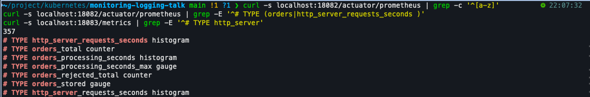
ServiceMonitor에는 세 가지를 맞춘다
apiVersion: monitoring.coreos.com/v1 kind: ServiceMonitor metadata: name: order-api namespace: apps labels: release: kps # ①spec: selector: matchLabels: app.kubernetes.io/name: order-api # ② namespaceSelector: {matchNames: [apps]} endpoints: - port: http # ③ path: /actuator/prometheus interval: 30s
| # | 맞출 상대 | 확인 |
|---|---|---|
| ① | Prometheus가 고르는 라벨 | Prometheus 리소스의 serviceMonitorSelector → {"release":"kps"} |
| ② | Service의 metadata.labels | kubectl -n apps get svc order-api --show-labels |
| ③ | Service 포트의 이름 | Service spec.ports[].name → http |
serviceMonitor/apps/order-api/0이 나타난다. 하나라도 어긋나면 에러 없이 타깃이 생기지 않는다.따라하기 ① 두 앱을 수집 대상에 올린다
| # | 명령 · 화면 | 볼 것 (기준값) |
|---|---|---|
| 1 | kubectl apply -f labs/k8s/servicemonitors.yaml | order-api · journal-api created |
| 2 | kubectl get servicemonitor -A -l release=kps | grep -E 'apps|journal' | 두 개가 목록에 있다 |
| 3 | 1~2분 뒤 Status → Target health, 검색 api | order-api 2/2 up · journal-api 3/3 up |
| 4 | Query: count(up) · sum(up) | 33 · 33 (28 + 앱 파드 5) |
| 5 | Query: http_server_requests_seconds_count (Table) | job="order-api" · job="journal-api" 줄들 |
| 6 | Status → Configuration, 검색 order-api | job_name: serviceMonitor/apps/order-api/0 |
PromQL은 네 가지 모양만 알면 대부분 읽힌다
| 모양 | 예 | 언제 쓰나 |
|---|---|---|
| ① 고르기 | http_server_requests_seconds_count{job="order-api", status=~"5.."} | 이름과 라벨로 시계열을 고른다. =~는 정규식 |
| ② 속도 | rate(http_server_requests_seconds_count[5m]) | 카운터(누적)를 초당 값으로. 카운터는 거의 항상 rate로 감싼다 |
| ③ 합치기 | sum by (job) (rate(…[5m])) | 파드 여러 개를 앱 단위로. by에 남길 라벨을 적는다 |
| ④ 비율 · 분위수 | sum(rate(…{status=~"5.."}[5m])) / sum(rate(…[5m]))histogram_quantile(0.99, sum by (le) (rate(…_bucket[5m]))) | 에러 비율, P99. 분위수는 le를 by에 꼭 남긴다 |
따라하기 ② 부하를 넣고 RED를 뽑는다
| # | 명령 · 질의 | 볼 것 (기준값) |
|---|---|---|
| 1 | k6 run -e DURATION=6m labs/k6/k6-red.js (port-forward 18082 · 18083) | 초당 30 정상 + 2 느린 요청 + 3 에러. 질의는 5분쯤 지나서 |
| 2 | R: sum by (job) (rate(http_server_requests_seconds_count[5m])) | order-api ≈ 36/s |
| 3 | E: sum by (job) (rate(…_count{status=~"5.."}[5m])) / sum by (job) (rate(…_count[5m])) | order-api ≈ 0.06 (6%) |
| 4 | D 평균: sum by (job) (rate(…_sum[5m])) / sum by (job) (rate(…_count[5m])) | ≈ 0.045 (45ms) |
| 5 | D 분위수: histogram_quantile(0.99, sum by (job, le) (rate(…_bucket[5m]))) | ≈ 0.79 (790ms) |
| 6 | 쪼개기: 5번의 job을 uri로, {job="order-api"}로 고른다 (Graph) | /api/chaos/slow만 ≈ 0.80 |
평균 대신 분위수를 보고, 튀면 라벨로 쪼갠다
# order-api, 같은 5분 평균 0.045 # 45ms P50 0.00058 # 0.58ms P95 0.725 # 725ms P99 0.789 # 789ms # P99를 uri로 쪼갠다 /api/chaos/slow 0.805 /actuator/prometheus 0.0178 /actuator/health/** 0.0040 /api/orders 0.0017 /api/chaos/error 0.0014
1. 평균은 없는 요청을 가리킨다
요청 절반은 1ms 안쪽, 상위 5%는 700ms를 넘는다. 45ms 근처의 요청은 거의 없다(1장 "평균의 함정").
2. 분위수로 꼬리를 본다
P50은 대부분의 경험, P99는 가장 느린 1%의 경험. 알림과 SLO는 P95 · P99로 건다.
3. 라벨로 쪼개 원인을 좁힌다
sum by (uri, le)로 바꾸자 느린 경로가 하나로 드러난다(0.805초, 나머지는 18ms 이하). 쪼갤 라벨이 계측에 있어야 가능하다.
연결과 질의에서 자주 막히는 곳
| 증상 | 원인 | 해결 |
|---|---|---|
| ServiceMonitor는 있는데 타깃이 안 생긴다 | ① release 라벨 없음 · ② Service 라벨 불일치 · ③ 포트를 숫자로 적음 | 앞 장의 확인 명령 세 개. 생성된 설정에 job이 있는지 Status → Configuration에서 본다 |
| 패널이 No data, 질의 결과 없음 | 코드의 이름으로 질의했다(orders_created_total) | 엔드포인트의 # TYPE 줄에서 실제 이름(orders_total)을 확인 |
| 에러가 없는 앱이 표에서 사라진다 | 5xx 시계열이 없으면 나눗셈 결과가 "없음"이지 0이 아니다 | 뒤에 or (sum by (job) (rate(…_count[5m])) * 0)를 붙여 0으로 채운다 |
| P50이 평균보다 수십 배 크다 | 버킷 경계가 앱 지연보다 훨씬 크다. 보간이 만든 값 | 버킷 경계를 앱의 실제 지연 분포(ms 단위)에 맞춘다 |
| 시계열 수가 계속 는다 | 값이 끝없는 라벨(사용자 ID · 요청 ID · 실제 경로) | 라벨은 경로 템플릿 · 상태 코드처럼 값이 정해진 것만 |
앱 연결이 끝났다고 말할 수 있는 명령과 기대값
| 명령 · 질의 | 기대값 |
|---|---|
kubectl get servicemonitor -A -l release=kps | order-api · journal-api가 목록에 있다 |
Query: count(up) · sum(up) | 33 · 33 |
sum by (job) (rate(http_server_requests_seconds_count[5m])) | order-api · journal-api 두 줄 |
histogram_quantile(0.99, sum by (job, le) (rate(…_bucket[5m]))) | 두 줄, 부하 중 order-api ≈ 0.79 |
histogram_quantile(0.99, sum by (uri, le) (rate(…_bucket{job="order-api"}[5m]))) | /api/chaos/slow만 0.8 근처 |
규칙을 만들고, 알림을 실제로 받는다
RED 질의에 임계값과 지속 시간을 붙여 알림 규칙을 만든다. Alertmanager가 알림을 묶어 수신처로 보내고, 해소되면 다시 알리는 것까지 확인한다. 대시보드는 코드로 넣는다.
용어 ① 알림 규칙
| 용어 | 원어 · 풀 네임 | 뜻 |
|---|---|---|
| 알림 규칙 | Alerting rule | PromQL 조건 + 지속 시간 + 라벨. 프로메테우스가 주기적으로 평가한다 |
| expr | Expression | 알림 조건 질의. 결과가 하나라도 있으면 조건 성립 |
| for | for (지속 시간) | 조건이 이 시간 동안 계속 성립해야 발화한다 |
| pending | Pending (대기) | 조건은 성립했지만 for 시간을 아직 채우지 못한 상태 |
| firing | Firing (발화) | for를 채워 Alertmanager로 보내지는 상태 |
| inactive | Inactive (비활성) | 조건이 성립하지 않는 평상시 상태 |
| severity | Severity (심각도) 라벨 | critical · warning. Alertmanager가 보낼 곳과 억제를 이 라벨로 정한다 |
| annotations | Annotations | 사람이 읽을 요약·설명·런북 링크. {{ $value }}로 현재 값을 넣는다 |
| 런북 | Runbook (책: 플레이북 Playbook) | 알림을 받았을 때 무엇을 확인하고 어떻게 조치할지 적은 문서 |
용어 ② Alertmanager와 SLO
| 용어 | 원어 · 풀 네임 | 뜻 |
|---|---|---|
| 라우트 | Route | 알림 라벨을 보고 어느 수신자로 보낼지 정하는 트리 |
| 수신자 | Receiver | 실제 전송 대상. Slack·메일·PagerDuty·웹훅(Webhook: 지정한 URL로 JSON을 POST) |
| 그룹화 | Grouping (group_by) | 같은 라벨의 알림 여러 개를 하나로 묶어 보낸다 |
| 억제 | Inhibition | critical이 울리는 동안 같은 대상의 warning을 규칙으로 자동으로 누른다 |
| 침묵 | Silence | 사람이 기간을 정해 특정 알림을 끈다. 계획 작업 중에 쓴다 |
| Watchdog | Watchdog 알림 | 늘 발화 상태인 알림. 이것이 멈추면 관측 파이프라인이 죽은 것 |
| 오차 예산 | Error budget | SLO가 허용하는 실패 몫. "99% 성공"이면 1% |
| 소진 속도 | Burn rate | 오차 예산을 평소 대비 몇 배 빠르게 쓰고 있나. 14.4배면 30일 예산이 약 2일에 바닥 |
사람이 지금 무언가 할 수 있을 때만 알림을 보낸다
알림을 건다
· SLO에 영향을 주는 증상: 사용자 요청 5%가 실패, 응답 시간이 약속을 넘음
· 관측 자체의 고장: 스크레이프 실패. 이게 죽으면 다른 알림이 모두 침묵한다
알림을 걸지 않는다
· 파드 하나가 실패할 때마다: 쿠버네티스가 스스로 재시작한다
· CPU·메모리가 높을 때: 사용자가 겪지 않으면 할 일이 없다. 원인을 찾을 때 본다
· 경험상 저절로 풀리는 문제
| 사람 대신 자동으로 고칠 수 있는 것 | 자동 조치 |
|---|---|
| 응답 없는 프로세스 | 라이브니스 프로브(liveness probe)가 컨테이너를 재시작 |
| 디스크가 꽉 참 | 오래된 로그를 자동 삭제해 공간 확보 |
책의 네 가지 조언은 규칙의 어느 칸에 들어가나
| 책 3.11의 조언 | 설정 위치 | 예 |
|---|---|---|
| 임계 시간은 5분 이상, 5·10·30·60분처럼 표준화 | 규칙의 for | for: 2m · for: 3m (짧게 잡은 실습값) |
| 플레이북 링크, 지역·앱 소유자·영향 시스템을 함께 | 규칙의 annotations · labels | summary · description · runbook_url |
| 팀 전체가 아니라 문제를 맡을 사람에게 | Alertmanager route · receiver | severity=critical → 당직 수신자 |
| 완벽한 알림은 없다. 점진적으로 개선 | 운영 습관 | 울렸는데 아무도 조치하지 않은 알림은 지운다 |
RED 질의에 임계값과 지속 시간을 붙이면 규칙이 된다
kind: PrometheusRule metadata: name: study-app-rules labels: {release: kps} # Prometheus의 ruleSelector와 맞춘다spec: groups: - name: study-app interval: 30s rules: - alert: AppHighErrorRate expr: | 100 * ( sum by (job) (rate(…_count{status=~"5.."}[5m])) / sum by (job) (rate(…_count[5m])) ) > 5 for: 2m labels: {severity: warning} annotations: summary: "{{ $labels.job }} 에러율 {{ $value }}%"
| 규칙 | 조건 · for · severity |
|---|---|
| ① AppTargetDown | up == 0 · 1m · critical |
| ② AppHighErrorRate | 5xx 비율 > 5% · 2m · warning |
| ③ AppHighLatencyP95 | P95 > 0.5초 · 3m · warning |
| ④ AppSLOFastBurn | 200ms 초과 비율 > 14.4 × 1% · 2m · critical |
프로메테우스는 판단하고, Alertmanager는 전달한다
30초마다 expr을 계산한다. 조건이 for 동안 이어지면 firing으로 Alertmanager에 보낸다
group_by로 묶고, 억제 · 침묵을 적용하고, 라벨(severity)로 수신자를 고른다
웹훅 · Slack · PagerDuty · 메일. 해소되면 resolved를 한 번 더 보낸다
# kps-values.yaml · alertmanager.config (일부) receivers: - name: study-default webhook_configs: - url: http://alert-sink.monitoring.svc:8080/default send_resolved: true - name: study-critical webhook_configs: - url: http://alert-sink.monitoring.svc:8080/critical
실습의 수신자
클러스터 안에 작은 웹훅 서버(alert-sink)를 띄운다. 받은 알림을 한 줄씩 로그로 찍어 kubectl logs로 도착을 확인한다.
운영에서는
같은 자리에 slack_configs · pagerduty_configs · email_configs를 쓴다. 규칙과 라우팅은 그대로다.
따라하기 ① 수신자를 띄우고 규칙을 넣는다
| # | 명령 · 화면 | 볼 것 (기준값) |
|---|---|---|
| 1 | kubectl apply -f labs/k8s/alert-sink.yaml | configmap · deployment · service created |
| 2 | kubectl -n monitoring logs deploy/alert-sink -f (터미널 하나를 이것에 둔다) | alert-sink listening on :8080 |
| 3 | kubectl apply -f labs/k8s/prometheusrule.yaml | study-app-rules created, 라벨 release=kps |
| 4 | 1분 뒤 Prometheus → Status → Rule health | 그룹 study-app, 규칙 4개 OK |
| 5 | Prometheus → Alerts | 4개 모두 inactive |
| 6 | Alertmanager UI: port-forward svc/kps-kube-prometheus-stack-alertmanager 9093 → Status | Config에 receivers study-default · study-critical, webhook url |
따라하기 ② 부하를 넣고 알림이 도착하는지 본다
| # | 하는 일 | 볼 것 |
|---|---|---|
| 1 | k6 run -e DURATION=6m labs/k6/k6-red.js | 부하 시작 시각을 적는다 |
| 2 | Prometheus → Alerts | 30초~1분 뒤 ② · ③ PENDING |
| 3 | 같은 화면 | for를 채우면 FIRING (②는 2분, ③은 3분 뒤) |
| 4 | alert-sink 로그 | group_wait 30초 뒤 [firing] 줄 도착 |
| 5 | Alertmanager UI | AppHighErrorRate 그룹 |
| 6 | k6가 끝나고 약 5분 | Alerts inactive, 로그에 [resolved] |
# kubectl -n monitoring logs deploy/alert-sink -f 02:07:16Z [firing] AppHighErrorRate severity=warning job=order-api receiver=study-default | order-api 에러율 5.6% 02:08:16Z [firing] AppHighLatencyP95 severity=warning job=order-api receiver=study-default | order-api P95 0.73초 … 부하 종료 02:09:59, 모두 inactive 02:15:29 02:17:16Z [resolved] AppHighErrorRate … | order-api 에러율 5.0% 02:18:16Z [resolved] AppHighLatencyP95 … | order-api P95 0.72초
발화는 for가, 해소는 rate의 창이 정한다
P95 알림은 울렸는데 SLO 알림은 울리지 않았다
# ④ 규칙의 값을 직접 계산 1 - ( sum by (job) (rate(…_bucket{le="0.2"}[5m])) / sum by (job) (rate(…_count[5m]))) # 결과 order-api 5.63% (임계 14.4%)
계산
SLO: 요청의 99%가 200ms 안에 → 오차 예산 1%. 5분 동안 예산을 14.4배 속도로 쓰면 30일 예산이 약 2일에 바닥난다. 임계 = 14.4 × 1% = 14.4%.
| ③ P95 지연 | ④ SLO 소진 | |
|---|---|---|
| 말하는 것 | 느린 요청이 있다 | 이 속도면 약속을 못 지킨다 |
| 이번 결과 | firing | 5.63% < 14.4%, 울리지 않음 |
| severity | warning (낮에 본다) | critical (새벽에도 깨운다) |
Alertmanager는 묶고, 기다리고, 골라서 보낸다
# kps-values.yaml 의 alertmanager.config (일부) route: group_by: [namespace, alertname] group_wait: 30s group_interval: 5m repeat_interval: 4h receiver: study-default routes: - receiver: "null" matchers: [alertname =~ "InfoInhibitor|Watchdog| NodeClockNotSynchronising"] - receiver: study-critical matchers: [severity = "critical"] inhibit_rules: - source_matchers: [severity = "critical"] target_matchers: [severity =~ "warning|info"] equal: [namespace, alertname]
| 설정 | 뜻 |
|---|---|
| group_by | 같은 네임스페이스 · 같은 알림은 한 덩어리. 파드 10개가 죽어도 알림 하나 |
| group_wait 30s | 첫 알림을 30초 기다려 연달아 터지는 것을 함께 보낸다 |
| group_interval 5m | 같은 그룹에 새 알림이 붙으면 5분 간격으로 다시 보낸다 |
| repeat_interval 4h | 해결되지 않은 알림을 4시간마다 다시 알린다 |
| routes | 위에서부터 맞는 첫 경로로. critical은 당직(study-critical), 나머지는 기본 |
| "null" | 보내지 않을 알림. Watchdog(상시 알림), kind 환경의 시계 경고 |
억제는 규칙이 자동으로, 침묵은 사람이 기간을 정해 끈다
# 같은 알림을 critical · warning 둘로 넣었을 때 severity=critical state=active inhibitedBy=0건 severity=warning state=suppressed inhibitedBy=1건
critical이 울리는 동안 같은 대상의 warning은 보내지 않는다. DB가 죽어 서비스 열 개가 경고를 내도 사람이 볼 것은 하나다.
# alertname=DemoAlert 에 10분 침묵 severity=critical state=suppressed silencedBy=1건 severity=warning state=suppressed silencedBy=1건
계획 작업 중에 알림을 잠시 끈다. critical까지 모두 눌린다. 반드시 끝나는 시각이 있다.
inhibitedBy(규칙)와 silencedBy(사람) 중 어느 쪽이 채워졌는지로 구분한다. "아는 문제니까 꺼 두자"는 침묵이 아니라 규칙이나 문제를 고칠 일이다.대시보드는 UI가 아니라 ConfigMap으로 넣는다
# 값 파일: Grafana 사이드카 설정 sidecar: dashboards: enabled: true label: grafana_dashboard labelValue: "1" searchNamespace: ALL
# 대시보드 JSON → 라벨 붙은 ConfigMap kubectl -n monitoring create configmap study-dashboards \ --from-file=labs/dashboards/study-red.json kubectl -n monitoring label configmap study-dashboards grafana_dashboard=1 # 사이드카 로그 Writing /tmp/dashboards/스터디/study-red.json
왜 코드로
UI에서 만든 대시보드는 Grafana 파드가 다시 뜨면 사라진다(대시보드용 영구 볼륨 없음). JSON 파일로 두면 저장소에서 버전 관리된다.
uid를 고정한다
study-red. 알림 annotations의 대시보드 링크가 이 값을 쓴다. 바뀌면 링크가 전부 깨진다.
"1"이다. 숫자 1로 적으면 사이드카가 집어 가지 않는다.하루 스무 번 울리는 알림은 울리지 않는 것과 같다
| 줄이는 방법 | 설정 |
|---|---|
| 증상에만 건다 | 규칙 넷 중 셋이 RED 지표. CPU·메모리 알림은 만들지 않았다 |
| 순간적인 것을 거른다 | for: 2~3m. 잠깐 튀는 것은 사람을 부르지 않는다 |
| 묶는다 | group_by: [namespace, alertname] |
| 누른다 | critical이 울리는 동안 같은 대상의 warning은 억제 |
| 지운다 | 울렸는데 아무도 조치하지 않은 알림은 지우거나 임계값을 올리거나 원인을 고친다 |
critical
새벽 3시에 깨워도 되는 것. 스크레이프 실패, SLO 빠른 소진
warning
업무 시간에 보면 되는 것. 에러율 5% 초과, P95 500ms 초과
알림에서 자주 막히는 곳
| 증상 | 원인 | 해결 |
|---|---|---|
| Rule health에 규칙이 없다 | PrometheusRule에 release: kps 라벨이 없다 | Prometheus의 ruleSelector와 같은 라벨을 붙인다 |
| Alerts는 FIRING인데 수신처에 안 온다 | group_wait 전이다 · 라우트가 "null"로 간다 · 수신자 URL이 틀렸다 | 30초 기다린다 · Alertmanager UI의 그룹에서 receiver 확인 · kubectl logs로 Alertmanager 에러 확인 |
| 고쳤는데 5분 동안 계속 울린다 | rate(…[5m]) 창에 에러가 남아 있다 | 정상 동작. description에 적어 둔다. 창을 줄이면 오탐이 는다 |
| 파드마다 알림이 따로 온다 | expr이 파드 라벨을 남긴다 | sum by (job)으로 묶는다 · group_by를 확인한다 |
| 계획 작업 중 알림이 쏟아진다 | 알림은 작업 여부를 모른다 | 끝나는 시각을 정한 침묵(Silence)을 건다 |
| 코드로 넣은 대시보드가 안 보인다 | ConfigMap 라벨이 grafana_dashboard=1이 아니다 | 라벨을 붙이고 사이드카 로그에서 Writing …을 확인 |
알림이 동작한다고 말할 수 있는 명령과 기대값
| 명령 · 화면 | 기대값 |
|---|---|
| Prometheus → Status → Rule health (study-app) | 규칙 4개, 모두 OK |
| 부하 없이 Prometheus → Alerts | study-app 규칙 모두 inactive |
부하 3~4분 뒤 kubectl -n monitoring logs deploy/alert-sink | [firing] AppHighErrorRate … order-api 에러율 5~6% |
| 부하 종료 6분 뒤 같은 로그 | [resolved] AppHighErrorRate … |
| Grafana → 스터디 → 스터디 — 서비스 RED | 요청 수 · 에러율 · P99 패널에 선 |
| Alertmanager → Silences | active 0 (실습용 침묵 정리) |
로그를 모으고, LogQL로 원인을 찾는다
파드 로그를 Alloy로 모아 Loki에 쌓는다. 로그가 쌓이는지 확인하고, LogQL로 좁히고 거르고 꺼내는 법을 익힌다. 메트릭에서 본 에러를 같은 시각의 로그로 이어서 확인한다.
용어 ① 로그 수집과 저장
| 용어 | 원어 · 풀 네임 | 뜻 |
|---|---|---|
| 구조화 로그 | Structured logging | 한 줄을 JSON처럼 키·값으로 찍는 방식. 질의할 때 필드를 꺼낼 수 있다 |
| 액세스 로그 | Access log | 웹 서버가 요청마다 한 줄씩 남기는 기록. 경로·상태 코드·처리 시간 |
| 사이드카 로그 전달기 | Sidecar log forwarder | 같은 파드에 붙어 앱의 로그 파일을 읽어 옮기는 컨테이너 |
| 감사 로그 | Audit log | 누가 언제 API 서버에 무엇을 요청했는지 남기는 기록 |
| 로그 회전 | Log rotation | 로그 파일이 커지면 잘라 새 파일로 바꾸는 것. 오래된 줄은 사라진다 |
| 보존 기간 | Retention period | 저장소가 로그를 지우기 전까지 들고 있는 기간 |
| 톨러레이션 | Toleration | 테인트(taint)가 걸린 노드에도 파드가 뜰 수 있게 하는 설정 |
| SingleBinary | Loki 배포 모드 | Loki의 모든 역할을 프로세스 하나로 돌리는 최소 구성 |
용어 ② LogQL
| 용어 | 원어 · 풀 네임 | 뜻 |
|---|---|---|
| 스트림 셀렉터 | Stream selector | {namespace="apps", app="order-api"}. 라벨로 스트림을 고른다 |
| 줄 필터 | Line filter · |= |~ | 본문에 문자열이 있는 줄만 남긴다. |~는 정규식 |
| 파서 | Parser · | json | pattern | 본문에서 필드를 꺼낸다. json은 JSON 줄, pattern은 고정 형식 줄 |
| __error__ | 파싱 에러 라벨 | 파서가 실패한 줄에 붙는다. | __error__=""로 걸러 낸다 |
| count_over_time | LogQL 함수 | 구간 안의 로그 줄 수. 로그를 시계열처럼 센다 |
| 구조화 메타데이터 | Structured metadata | 라벨 인덱스를 늘리지 않고 줄마다 필드를 붙이는 방식 |
전부 로깅하면 찾기 어렵고 비싸다
| 판단 | 기준 |
|---|---|
| 찍는다 | 나중에 읽을 일이 있는 줄. 요청 경로·상태 코드·처리 시간, 에러와 원인 |
| 찍지 않는다 | 프로브 성공 로그(실패는 이벤트·메트릭에 남는다), "받았다"와 "처리했다" 중복, 정상 응답 본문 |
| 보존 기간 | 30~45일. 지난주 장애를 이번 주에 조사하고 몇 주 전과 비교할 수 있는 길이 |
| 규정상 장기 보관 | 더 저렴한 저장소로 옮겨 보관한다(예: 금융거래기록 5년) |
클러스터에서 모을 로그는 네 종류다
| 대상 | 무엇 | 수집하려면 |
|---|---|---|
| 노드 | kubelet · 컨테이너 런타임(containerd) · 시스템 데몬 | 노드의 저널(journald)을 읽는 수집기 |
| 컨트롤 플레인 | API 서버 · 스케줄러 · 컨트롤러 매니저 · etcd | 컨트롤 플레인 노드에도 수집기가 떠야 한다(톨러레이션 필요) |
| 감사 | 누가 언제 무엇을 요청했나. 보안 모니터링 | API 서버에 감사 정책을 켜야 생긴다. 양이 많아 정책으로 줄인다 |
| 애플리케이션 | 앱이 stdout·stderr로 내보내는 것 | DaemonSet 수집기가 파드 로그를 읽는다 |
앱은 stdout으로 찍고 수집은 노드마다 하나가 맡는다
앱은 어디에 저장되는지 몰라도 된다
컨테이너 런타임이 stdout을 노드 파일로 받아 두고, 노드마다 하나씩 뜬 수집기가 읽어 간다. 앱을 몇 개 띄우든 수집기 수는 노드 수와 같다.
앱이 파일에만 쓸 때
같은 파드에 전달기 컨테이너를 붙여 파일을 읽어 옮긴다. 앱을 고칠 수 없을 때 쓴다. 파드마다 컨테이너가 하나씩 늘고 메모리도 그만큼 든다.
파드가 지워지면 kubectl logs도 끝이다
# ① 실행 중 kubectl -n demo logs noisy | tail -1 {"level":"info","msg":"작업 4"} # ② 파드가 Error로 끝난 뒤 kubectl -n demo logs noisy | tail -1 {"level":"error","msg":"마지막에 터졌다"} # ③ 파드를 지운 뒤 kubectl -n demo delete pod noisy kubectl -n demo logs noisy error: ... pods "noisy" not found
| 파드가 지워지는 때 | 얼마나 자주 |
|---|---|
| 롤아웃 | 배포할 때마다 옛 파드가 지워진다 |
| HPA 축소 | 8개에서 3개로 줄면 5개가 사라진다 |
| 노드 비우기(drain) | 파드가 다른 노드로 옮겨진다 |
| OOM 재시작 | 옛 컨테이너 로그는 하나만 남는다 |
| 로그 회전 | 파드가 살아 있어도 오래된 줄은 잘린다 |
kubectl logs는 파드에 붙어 있는 기능이지 로그 저장소가 아니다. 노드·파드와 수명이 분리된 별도 저장소가 필요하다.로깅 도구는 무엇을 색인하나로 비용이 갈린다
| 도구 | 운영 형태 | 저장 · 검색 방식 |
|---|---|---|
| Loki | 설치형 또는 SaaS | 라벨만 색인, 본문은 압축 저장. 싸지만 본문 검색은 스트림을 훑는다 |
| Elastic Stack | 설치형 또는 SaaS | 본문 전체를 색인(전문 검색). 검색이 빠르지만 저장·메모리가 크다 |
| Datadog · Sumo Logic | SaaS | 벤더 저장소. 에이전트가 보낸다 |
| 클라우드 서비스 | 클라우드 관리형 | CloudWatch Logs · Cloud Logging · Azure Monitor Logs |
Loki에서 라벨 조합 하나 = 스트림 하나다
앱이 요청마다 stdout에 한 줄 남기게 한다
journal-api: 요청마다 JSON 한 줄 (코드에 추가)
{"level":"info","msg":"request","method":"GET",
"path":"/api/entries","status":200,"durationMs":1,
"pod":"journal-api-5d8fcd6cf9-rgjrf"}
order-api: 코드 수정 없이 환경 변수로 톰캣 액세스 로그를 stdout에
env: - {name: SERVER_TOMCAT_ACCESSLOG_ENABLED, value: "true"} - {name: SERVER_TOMCAT_ACCESSLOG_DIRECTORY, value: /dev} - {name: SERVER_TOMCAT_ACCESSLOG_PREFIX, value: stdout} - {name: SERVER_TOMCAT_ACCESSLOG_SUFFIX, value: ""} - {name: SERVER_TOMCAT_ACCESSLOG_ROTATE, value: "false"}- {name: SERVER_TOMCAT_ACCESSLOG_PATTERN, value: '%h %l %u %t "%r" %s %b %D'} # %D 처리 시간
127.0.0.1 - - [26/Sep/2026:12:10:42 +0000] "GET /api/orders HTTP/1.1" 200 93 1698
Loki는 저장, Alloy는 파드 로그를 읽어 보내는 파이프라인
loki-values.yaml (일부)
deploymentMode: SingleBinary loki: auth_enabled: false commonConfig: {replication_factor: 1} storage: {type: filesystem} schemaConfig: # 없으면 설치 실패 configs: [{store: tsdb, schema: v13, …}] limits_config: allow_structured_metadata: true retention_period: 72hsingleBinary: persistence: {enabled: true, size: 10Gi}
alloy-values.yaml 파이프라인 네 토막 (일부)
// 1) 파드를 찾는다 discovery.kubernetes "pods" { role = "pod" } // 2) 붙일 라벨을 고른다. 고르지 않은 것은 버려진다 discovery.relabel "pod_logs" { rule { … target_label = "namespace" } rule { … target_label = "pod" } rule { … target_label = "app" } } // 3) 쿠버네티스 API로 로그를 읽는다 loki.source.kubernetes "pods" { … } // 4) Loki로 보낸다 loki.write "default" { endpoint { url = "http://loki-gateway.logging…/loki/api/v1/push" } }
따라하기 ① 설치하고, 로그가 쌓이는지 본다
| # | 명령 · 화면 | 볼 것 (기준값) |
|---|---|---|
| 1 | helm upgrade --install loki grafana/loki -n logging --create-namespace \ --version 7.3.0 -f labs/helm/loki-values.yaml --wait | 약 1분 |
| 2 | helm upgrade --install alloy grafana/alloy -n logging \ --version 1.12.1 -f labs/helm/alloy-values.yaml --wait | 약 1분 |
| 3 | kubectl -n logging get pods -o wide | loki-0 · loki-gateway · alloy 2개(워커 두 대) |
| 4 | Grafana → Explore → 데이터소스 Loki → Label browser | 라벨 namespace · app · pod · container |
| 5 | {namespace="apps", app="order-api"} (Run query) | 액세스 로그 줄이 시간순으로 |
| 6 | sum by (app) (count_over_time({namespace=~"journal|apps"}[5m])) | 부하 중 앱별 5분 줄 수 (journal 9087 · order 10750) |
LogQL은 좁히고 → 거르고 → 꺼내고 → 센다
| 단계 | 예 | 언제 쓰나 |
|---|---|---|
| ① 좁히기 | {namespace="apps", app="order-api"} | 라벨로 스트림을 고른다. 항상 여기서 시작한다. 색인을 쓰므로 빠르다 |
| ② 거르기 | |= "/api/chaos/error" · |~ " 500 " · != "health" | 본문에 문자열 · 정규식이 있는(없는) 줄만. 파서보다 먼저 두면 빠르다 |
| ③ 꺼내기 | | json · | pattern `<_> … <status> <_> <dur>` | 본문에서 필드를 꺼내 status >= 500처럼 조건을 건다. 뒤에 | __error__="" |
| ④ 세기 | sum by (status) (count_over_time({…} | … [5m])) | 줄 수를 메트릭처럼. 그래프 · 알림에 쓴다 |
{라벨}로 고르고, [5m] 창으로 세고, sum by로 묶는다. 다른 점은 ②③, 본문을 거르고 꺼내는 단계가 있다는 것이다.따라하기 ② 500 에러가 어느 요청인지 로그에서 찾는다
| # | 질의 (k6 부하 중, Explore → Loki) | 볼 것 (실측) |
|---|---|---|
| 1 | {namespace="apps", app="order-api"} |~ " 500 " | 500 줄만. 경로가 모두 /api/chaos/error |
| 2 | sum by (status) (count_over_time({namespace="apps", app="order-api"} | pattern `<_> <_> <_> [<_>] "<method> <path> <_>" <status> <_> <dur>` [5m])) | 200 10115 · 500 634 |
| 3 | sum by (path) (count_over_time({namespace="apps", app="order-api"} | pattern `…` | status="500" [5m])) | /api/chaos/error?rate=0.7 634 |
| 4 | {namespace="journal", app="journal-api"} | json | __error__="" | durationMs > 0 | JSON 필드(method · path · status · durationMs)가 펼쳐진다 |
| 5 | sum by (app) (count_over_time({namespace=~"journal|apps"} | json | __error__="" [5m])) | JSON으로 파싱되는 줄은 journal-api만(9084) |
GET /api/chaos/error?rate=0.7이었다"고 말한다.메트릭으로 언제 · 어디를 잡고, 같은 라벨의 로그로 넘어간다
# 같은 5분, order-api의 500 # 로그 (Loki) sum(count_over_time({namespace="apps", app="order-api"} |~ " 500 " [5m])) → 634 # 메트릭 (Prometheus) sum(increase(http_server_requests_seconds_count{ job="order-api", status=~"5.."}[5m])) → 633.4
두 값이 거의 같다
같은 요청을 한쪽은 카운터로, 한쪽은 줄로 셌다. 메트릭 값의 소수점은 increase()가 30초 간격 샘플로 5분 창을 추정(외삽)해서 붙는다.
Explore Split
Explore 오른쪽 위 Split으로 화면을 둘로 나눈다. 왼쪽 Prometheus에 에러율, 오른쪽 Loki에 500 줄. 시간 범위가 함께 움직인다.
대시보드 로그 패널
스터디 · 서비스 RED 맨 아래 패널이 같은 시각의 에러 로그를 보여 준다. 위쪽 그래프에서 "5xx가 늘었다"를 보고 내려와 "무엇이었나"를 읽는다.
로그에서 자주 막히는 곳
| 증상 | 원인 | 해결 |
|---|---|---|
| Loki에 앱 로그가 하나도 없다 | 앱이 요청 로그를 찍지 않는다 | kubectl logs로 먼저 확인. 앱에서 요청 로그를 켠다 |
| order-api 액세스 로그가 조용히 사라졌다 | SERVER_TOMCAT_ACCESSLOG_ROTATE=false가 빠졌다. 톰캣이 /dev/stdout.날짜에 쓰려다 실패 | 환경 변수를 되살린다. 에러가 남지 않으니 로그 줄 수로 확인 |
세기 질의가 pipeline error: 'JSONParserErr' | JSON이 아닌 줄이 섞였다 | 파서 바로 뒤에 | __error__="" |
| 스트림 수가 요청 수만큼 는다 | path · 사용자 ID처럼 값이 끝없는 필드를 라벨로 올렸다 | 라벨은 namespace · app · pod만. 나머지는 본문에서 파서로 꺼낸다 |
| 지운 라벨이 Label browser에 계속 보인다 | /labels는 보존 기간(72시간) 안의 모든 라벨을 돌려준다 | 현재 상태는 series API(/loki/api/v1/series)로 본다 |
| 컨트롤 플레인 파드 로그가 없다 | Alloy 데몬셋이 워커에만 떴다(테인트) | 필요하면 Alloy에 toleration을 더한다 |
로그 수집이 동작한다고 말할 수 있는 명령과 기대값
| 명령 · 질의 | 기대값 |
|---|---|
kubectl -n logging get pods | Running 4 (loki 1 · gateway 1 · alloy 2) |
| Explore → Loki → Label browser | namespace · app · pod · container |
sum by (app) (count_over_time({namespace=~"journal|apps"}[5m])) | journal-api · order-api 둘 다 0보다 크다 |
{namespace="apps", app="order-api"} |~ " 500 " (부하 중) | /api/chaos/error 줄이 나온다 |
{namespace="journal", app="journal-api"} | json | __error__="" | 필드 method · path · status · durationMs |
| Grafana → 스터디 — 서비스 RED 맨 아래 로그 패널 | 에러 · 500 줄이 보인다 |